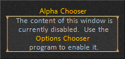
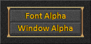

The Alpha Chooser window is used to adjust the Font and Window alpha or transparency level.
The window will appear when you right click on the frame or border of a new style window. Click on the buttons to open a "slider" window that can be used to adjust the alpha level of the font and window controls.
There is nothing shown when the window is concealed. The window is invisible with no graphics or controls to minimize the amount of memory used. Nothing will appear on the screen when you attempt to activate the window.


Note: These options only apply to the window used to adjust the alpha level of new style (XML based) windows. There is currently no method available to disable the Alpha Chooser for old style (non XML based) windows. In addition, this option does not affect the ability to change the font and window alpha levels via the new context popup in the new chat windows.